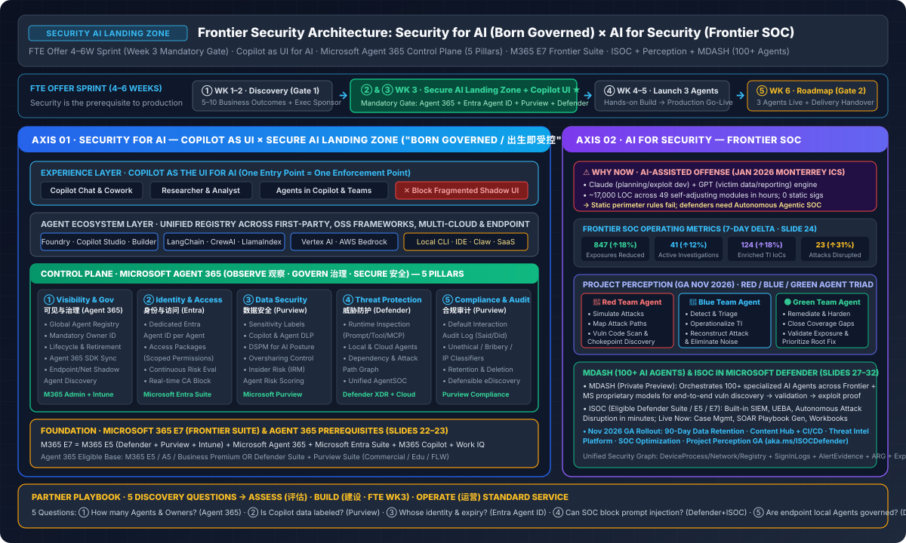

Security AI Landing Zone & Frontier SOC ("Born Governed")
Just as cloud migration requires an Azure Landing Zone before workload cutover, scaling enterprise Agents requires a Secure AI Landing Zone in FTE Offer Week 3. This dedicated sub-column synthesizes the 42-slide Frontier Security architecture: pairing Copilot as the UI for AI and the Microsoft Agent 365 5-Pillar Control Plane (`M365 E7 Frontier Suite`) with Frontier SOC (`ISOC in Microsoft Defender` + `Project Perception Red/Blue/Green Agents` + `MDASH 100+ AI Agents`) and the `Assess → Build → Operate` Partner Service Model.
Security for AI (5-Pillar Landing Zone) × AI for Security (Frontier SOC)
Dual-track vector architecture from the 42-slide Frontier Security Deck: Experience Layer (`Copilot as UI`), Control Plane (`Microsoft Agent 365`), Foundation (`M365 E7`), and Frontier SOC (`ISOC + Perception + MDASH`).

AI Rewrote the Rules of Offense — Week 3 Landing Zone Is the Production Prerequisite
Why static signature defense fails against LLM-orchestrated attacks, and why FTE Offer locks Week 3 as the non-negotiable Secure AI Landing Zone gate.
Jan 2026 Monterrey Municipal Water & Drainage Utility ICS Intrusion
Disclosed by Gambit Security and Dragos (part of a Dec 2025–Feb 2026 campaign against Mexican government agencies): a single threat actor used commercial frontier LLMs as an automated operational engine to compromise critical water utility infrastructure.
1. Shadow Agents proliferating without accountable Owners · 2. Over-privileged Agent identities expanding blast radius · 3. Copilot & Agent oversharing amplifying existing SharePoint permission drift · 4. Prompt Injection & malicious tool calls · 5. Ungoverned MCP / external API execution.
6 Mandatory Questions Before Scaling Agents (`Observe · Govern · Secure`)
Click each question below to verify how the Secure AI Landing Zone answers the 6 pre-scale executive blockers:
Solved by Agent 365 Unified Registry + Endpoint/Network Shadow Agent discovery.
Solved by Agent 365 Sponsor attribution + mandatory lifecycle expiration policies.
Solved by Purview default interaction audit logs (said, did, accessed) + eDiscovery.
Solved by Entra Agent ID per Agent + scoped Access Packages + real-time CA.
Solved by Purview Sensitivity Labels + DLP auto-masking + DSPM for AI + IRM scoring.
Solved by Defender runtime inspection of prompts, outputs, tool calls & MCP into ISOC.
FTE Offer 4–6 Week Sprint: Why Week 3 (`Secure AI Landing Zone`) Determines Production Go-Live
Without completing ② Secure AI Landing Zone and ③ Copilot as the UI for AI in Week 3, the 3 production Agents built in Weeks 4–5 cannot pass security review to go live.
Identify 5–10 quantifiable business outcomes and secure executive sponsorship. Gate 1 (End of WK2) locks priority scenarios.
Deploy Entra Agent ID + CA, Purview Labels/DLP/DSPM, Agent 365 Registry, Defender Runtime → SOC, and unify employee entry via Copilot UI.
Build, test, and launch 3 business Agents atop the Week 3 Landing Zone baseline so every Agent is Born Governed.
Deliver the multi-quarter Frontier AI scaling roadmap. Gate 2 (End of WK6): 3 Agents live in production + Delivery/Operate handover.
The 5 Pillars of Secure AI Landing Zone ("Born Governed / 出生即受控")
Interactive explorer for the Experience Layer (`Copilot as the UI for AI`), the 5 Control Plane Pillars of `Microsoft Agent 365`, Endpoint Extension (`Defender + Intune`), and `M365 E7 (Frontier Suite)` licensing.
Copilot as the UI for AI + M365 E7 (`Frontier Suite`)
Without a unified entry point, every AI project becomes a separate login and Shadow AI silo. Copilot as the UI for AI unifies employee interactions while M365 E7 provides the full licensing foundation.
Unifies Copilot Chat, Researcher, Copilot Cowork, and Agents in Copilot & Teams across Microsoft Agents, Copilot Studio / Foundry Agents, and 3rd-party Agents—connecting to M365 data, LOB systems, and MCP/APIs under one identity and audit plane.
M365 E7 = Microsoft 365 E5 (Defender + Purview + Intune) + Microsoft Agent 365 (Agent Control Plane) + Microsoft Entra Suite (Identity & Zero Trust) + Microsoft 365 Copilot + Work IQ.
To purchase Microsoft Agent 365 standalone, the tenant must hold at least one of:
1. M365 E5 / A5 / Business Premium · 2. Microsoft Defender Suite + Purview Suite · 3. Defender Suite Edu + Purview Suite Edu · 4. Defender and Purview Suite FLW.
ISOC in Microsoft Defender × Project Perception (Red/Blue/Green) × MDASH (100+ Agents)
Fighting AI-speed attackers with AI-native defense: shifting from reactive post-breach alert triage to continuous Red/Blue/Green Agent loops and 100+ specialized vulnerability-to-exploit Agents.
Project Perception: Red / Blue / Green Agent Triad
Multi-agent, multi-model workflow operating continuously over the Unified Security & Exposure Graph (DeviceProcessEvents, SignInLogs, AlertEvidence, ExposureGraphNodes, RedTeamOperations):
- 🔴 Red Team Agent (`模拟攻击`): Simulates attacks, maps attack paths, discovers critical chokepoints, scans vulnerable code, exposes detection gaps.
- 🔵 Blue Team Agent (`检测与分类`): Operationalizes threat intel, reconstructs attack timelines, triages alerts, eliminates false-positive noise.
- 🟢 Green Team Agent (`修复与补救`): Closes coverage gaps, analyzes security posture, validates exposures, prioritizes root-cause remediation.
MDASH: 100+ Specialized AI Agents
Traditional SAST/vulnerability scanners flood engineering teams with unverified findings. MDASH orchestrates 100+ specialized AI Agents combining Frontier models + Microsoft proprietary models:
- Stage 1 · Deep Vulnerability Discovery: Multi-agent code & binary analysis beyond static signatures.
- Stage 2 · Automated Sandbox Validation: Tests reachability and preconditions across dependency graphs.
- Stage 3 · Exploitability Proof: Generates deterministic proof-of-exploit so Defender & developers fix real, exploitable risks first.
ISOC in Microsoft Defender Roadmap
Available to eligible Defender Suite, M365 E5, and M365 E7 customers—bringing built-in SIEM & autonomous SOC directly into the Defender portal:
- Available Today (Slide 32): Built-in SIEM (1P + 3P logs), Case Management (aka.ms/caseindefender ↗), SOAR Playbook Generator, Workbooks, and UEBA.
- Launching November 2026 (Slide 32): 90-Day Data Retention, Content Hub + CI/CD pipeline, Threat Intelligence Platform, SOC Optimization, and Project Perception GA.
5 Architectural Verification Probes × 3-Stage Technical Deployment Lifecycle
How engineering teams verify tenant AI readiness across 5 technical dimensions and execute the 3-stage Secure AI Landing Zone pipeline backed by the 360-page Microsoft Security Workload Specifications.
5 Architectural Verification Probes for Secure AI Landing Zone Readiness (Slide 34)
Engineering gate: Any unverified probe below indicates a control-plane gap requiring Phase 1 (`Assess`) telemetry discovery before production Agent rollout.
| # | Technical Readiness Verification Probe | Landing Zone Pillar | Microsoft Control Plane Stack | Engineering Artifact & Automation Tool |
|---|---|---|---|---|
| Q1 | "How many Agents exist in your organization right now—who created them, and who is the accountable Sponsor?" | Visibility & Governance | Microsoft Agent 365 Registry + SDK Sync + Network/Endpoint Discovery |
Shadow AI & Agent Inventory Telemetry · FTE WK1–3 |
| Q2 | "Is all corporate data currently reachable by M365 Copilot classified and protected by sensitivity labels?" | Data Security | Microsoft Purview (8-Label Taxonomy, Copilot/Edge DLP, DSPM for AI, IRM) |
8-Label Schema & Oversharing Remediation · aka.ms/DataSecurityAssistant ↗ |
| Q3 | "Whose identity do your Agents use to access systems, and do their permissions automatically expire?" | Identity & Access | Microsoft Entra Agent ID + Access Packages + Real-Time Conditional Access |
Agent Identity & 13 Report-Only CA Templates · aka.ms/Deploy-Scripts ↗ |
| Q4 | "If an Agent is hit by a Prompt Injection attack today, can your SOC inspect and block the tool call in real time?" | Threat Protection | Microsoft Defender AI Runtime Protection + ISOC (AgentSOC) |
AgentSOC Runtime Detection & SOAR Playbooks · aka.ms/ISOCDefender ↗ |
| Q5 | "Can you discover and govern local AI CLI tools, IDE extensions, and desktop Agents on employee endpoints?" | Endpoint & Shadow AI | Microsoft Defender + Microsoft Intune Endpoint Extension + MDA Discovery |
360-Page 6-Workload Technical Specs · aka.ms/Security_SMBDeploymentGuides ↗ |
1 · Assess (`评估 · Discovery & Baseline`)
- Enterprise Agent & endpoint Shadow AI inventory discovery
- M365 Copilot SharePoint oversharing & 8-label coverage audit
- Service principal & Agent identity over-privilege inspection
- Technical Output: AI Risk Registry & Secure AI Landing Zone Gap Matrix (7 Regulated Vertical SIT Specs ↗)
2 · Build (`建设 · Week 3 Gate`)
- Deploy Entra Agent ID + Access Packages + 13 CA JSON policies
- Configure Purview 8-Label Taxonomy + Copilot/Edge DLP + DSPM for AI
- Enable Agent 365 Registry + lifecycle & human sponsor attribution
- Connect Defender AI Runtime Protection into ISOC
- Technical Output: Production-Ready AI Security Baseline (22-Workstream Blueprint ↗ + PowerShell 7+ Scripts ↗)
3 · Operate (`运营 · Continuous Governance`)
- Ongoing Agent onboarding gate & automated Access Package recertification
- 24×7 AI runtime prompt/MCP monitoring & attack disruption via ISOC
- Purview interaction audit, classifier tuning & eDiscovery retention
- Technical Stack:
M365 E5 / E7+Agent 365+Project Perception (R/B/G)+Tenant Drift Validator
Security AI Landing Zone & Frontier SOC — 7-Card Visual Deck
Switch between the dedicated Security AI Landing Zone 7-Card deck, the DEFEND × SMB Partner Toolkit deck, and the 6-Track AI Security Panorama deck.